Préparation des courses 2
dobby_pr_parer_la_liste_de_courses_2
320 px

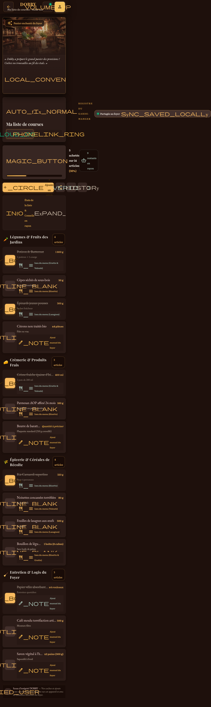

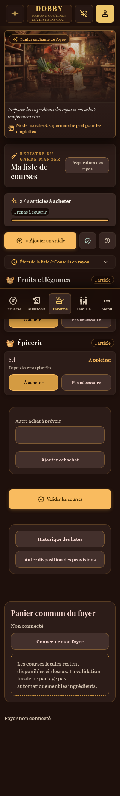
390 px

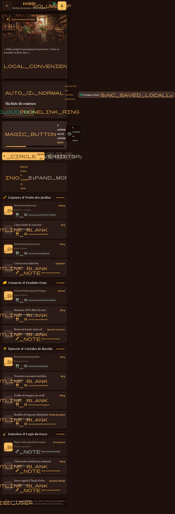

13 sources · 320 et 390 px. Profil de test éphémère, données de contrôle dans le moteur DOBBY. Référence : HTML source sans scripts fictifs, ressources locales. Deux URL Google indisponibles utilisent la même illustration de remplacement Taverne dans les deux colonnes ; cette limite est consignée dans la provenance.
Index des captures · État et écarts · Contrôles navigateur
dobby_la_taverne_gourmande_repas_menus
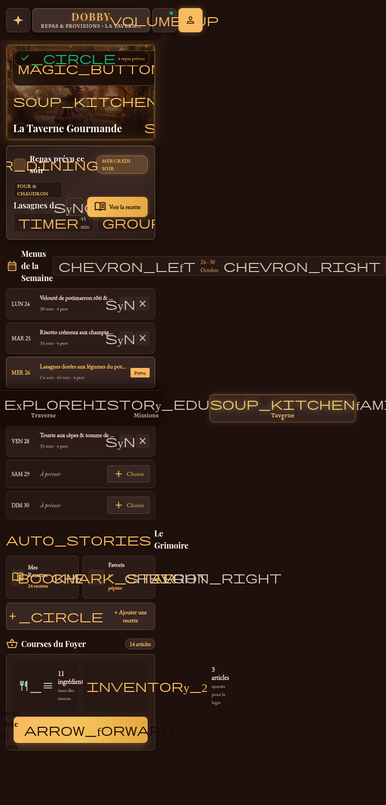
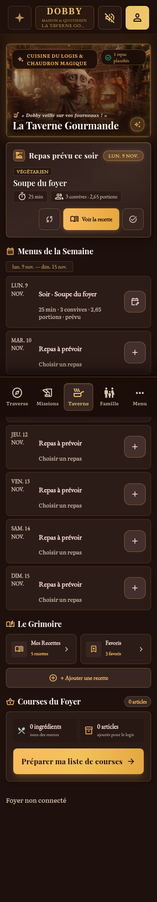
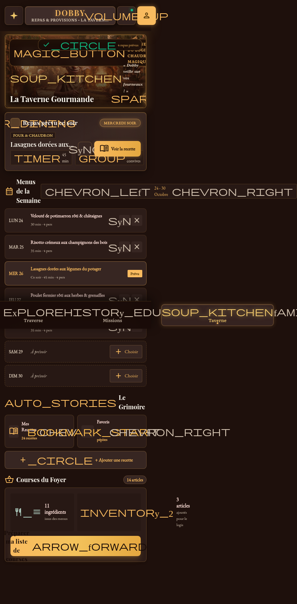
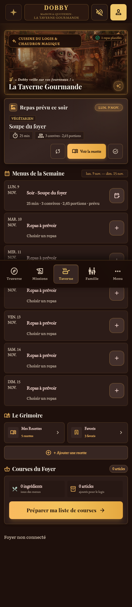
dobby_choisir_un_repas_nombre_de_convives
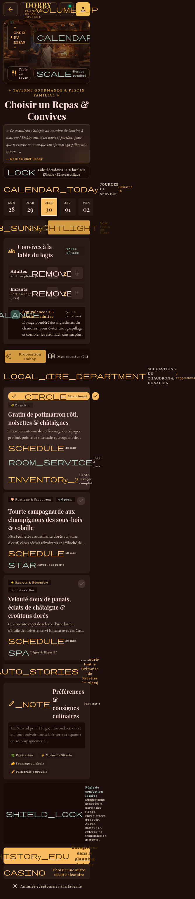
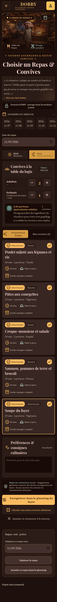
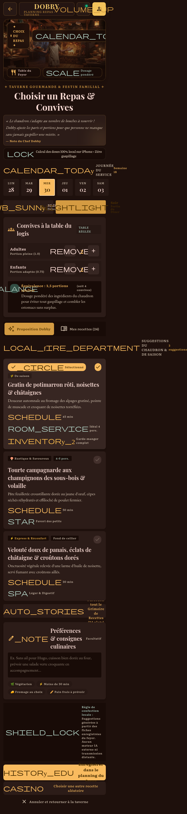
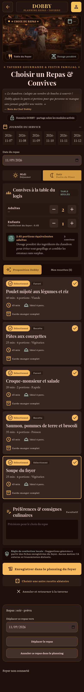
dobby_grimoire_des_recettes_favoris_du_logis
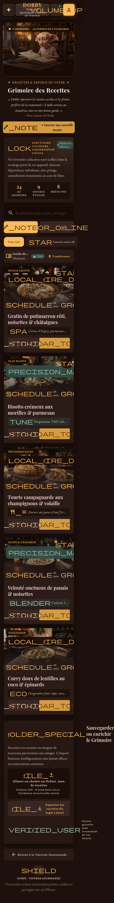
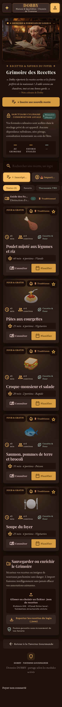
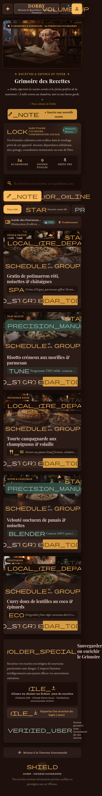
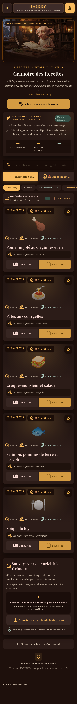
dobby_fiche_d_taill_e_d_une_recette
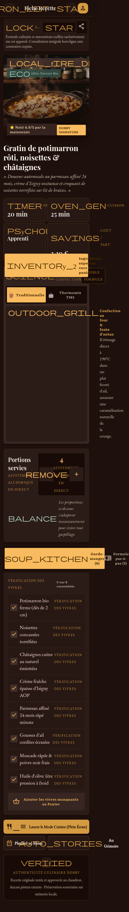
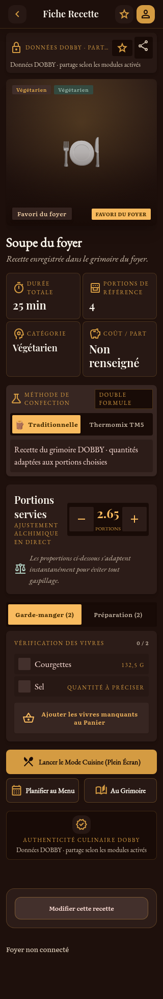
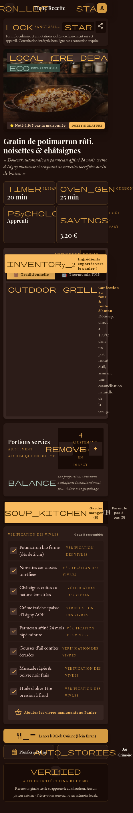
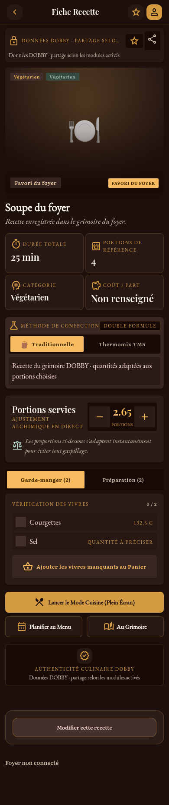
dobby_mode_cuisine_tape_par_tape
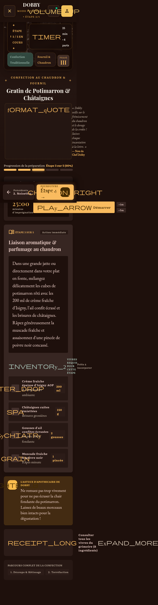
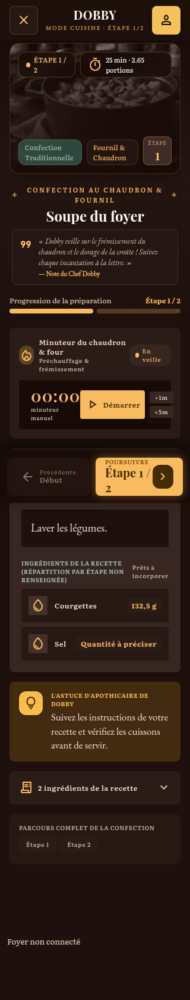
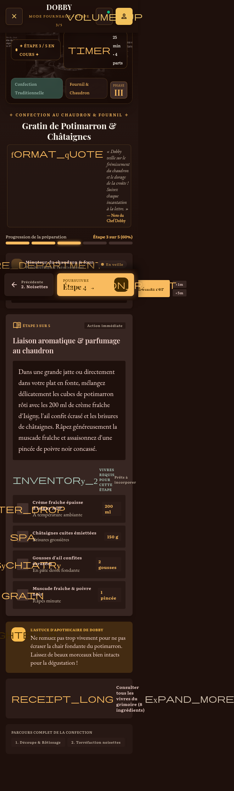
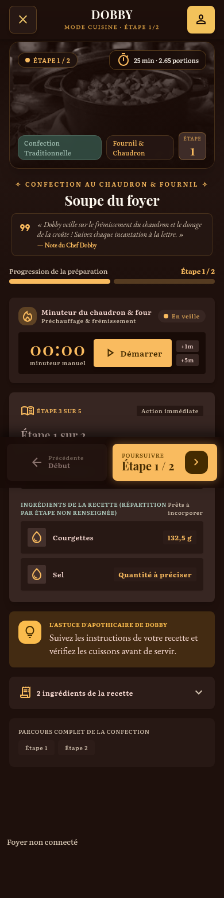
dobby_adaptation_thermomix_tm5
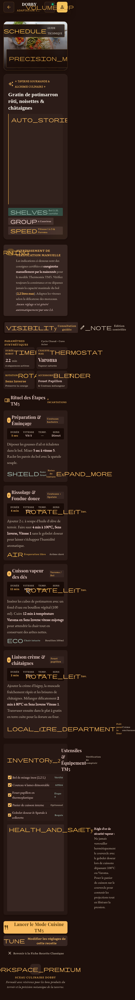
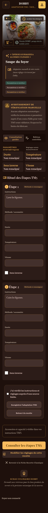
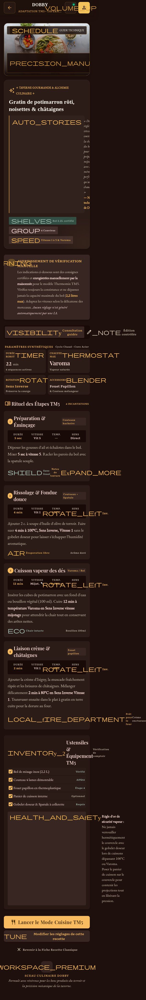
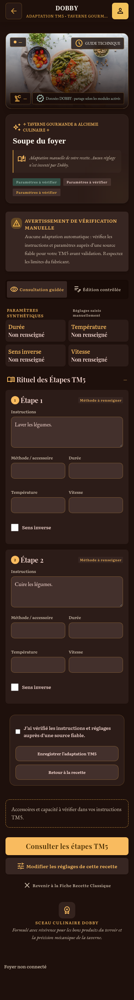
dobby_ajouter_une_recette_manuellement_1
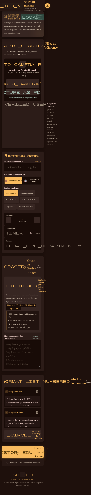
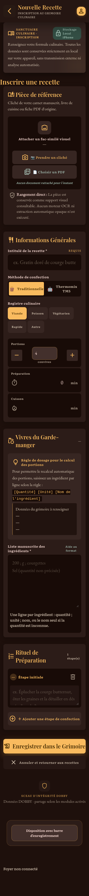
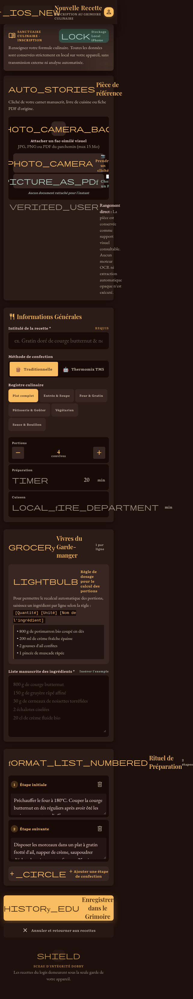
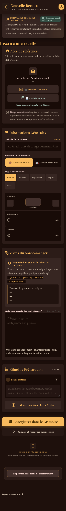
dobby_ajouter_une_recette_manuellement_2
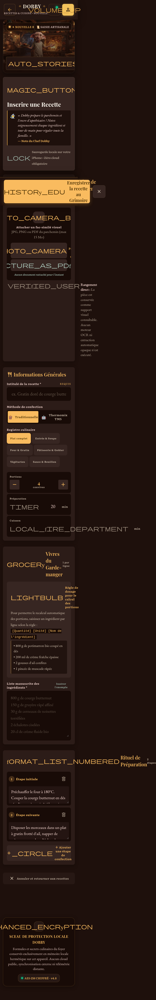
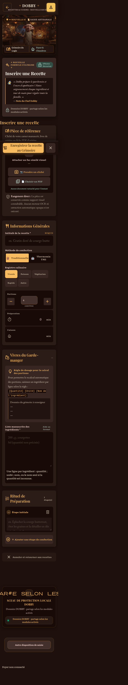
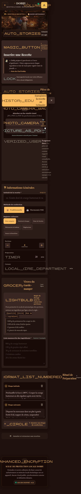
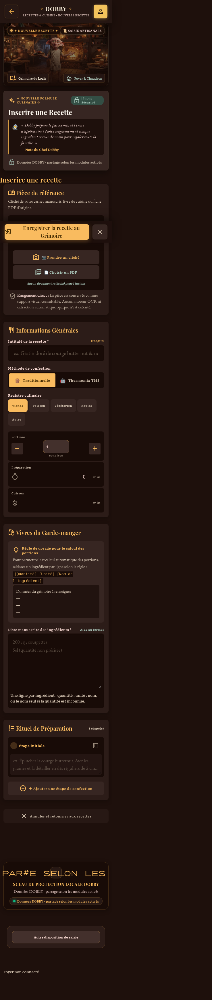
dobby_importer_un_lot_de_recettes_json
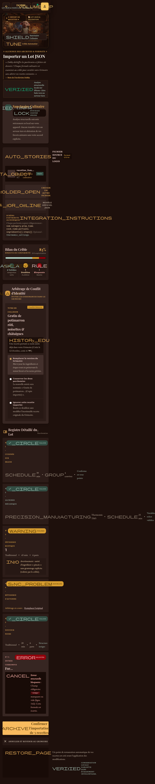
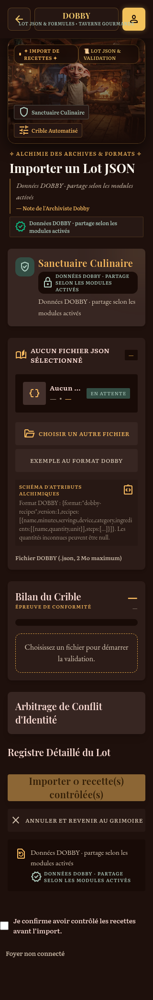
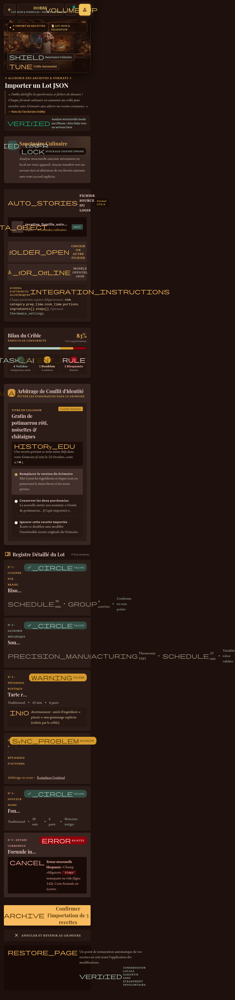
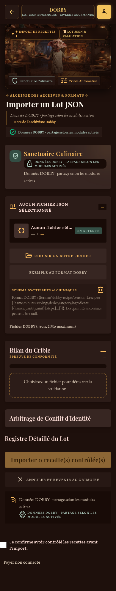
dobby_pr_parer_la_liste_de_courses_1
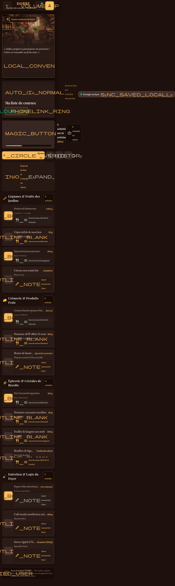
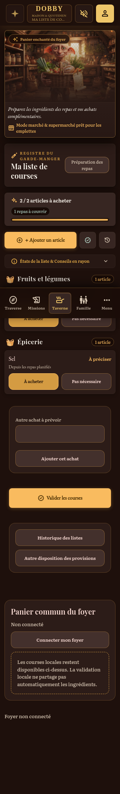
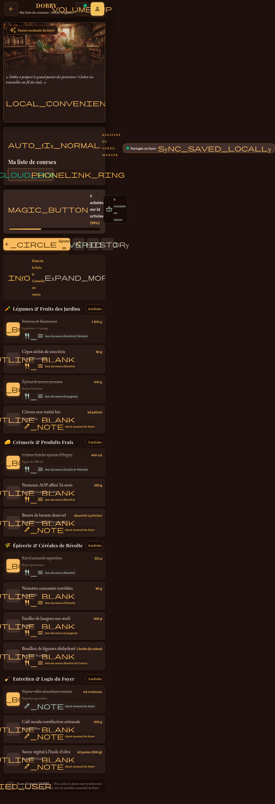
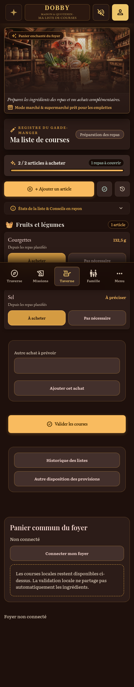
dobby_pr_parer_la_liste_de_courses_2



dobby_liste_de_courses_valid_e
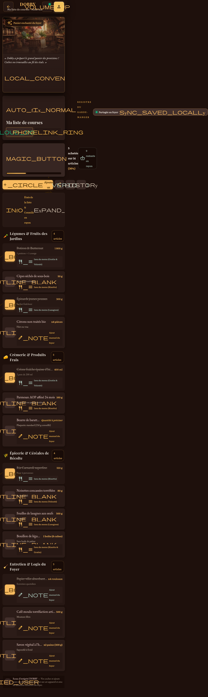
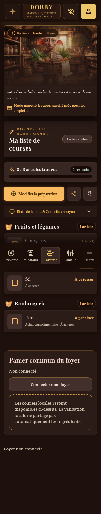
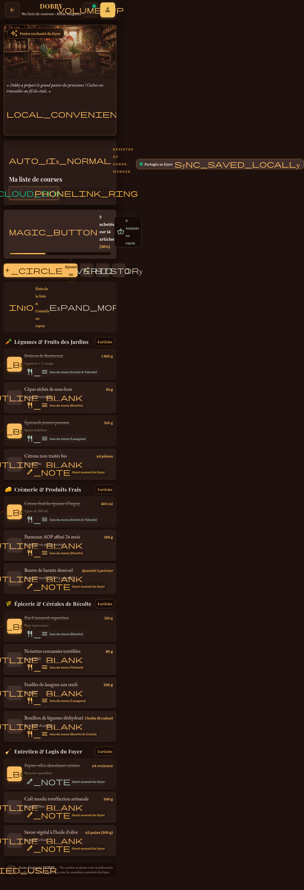
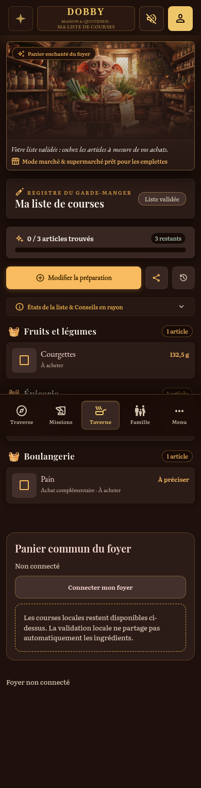
dobby_historique_des_listes_de_courses
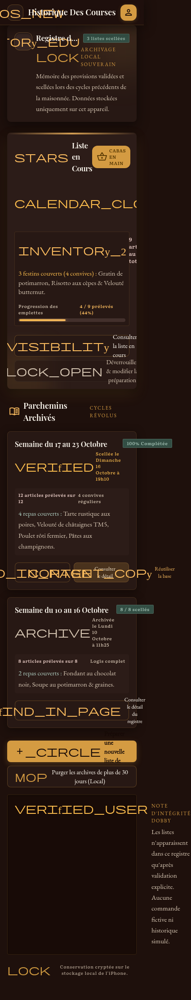
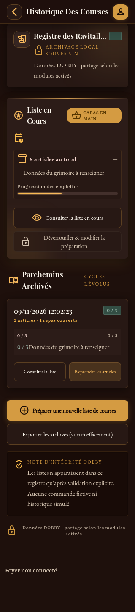
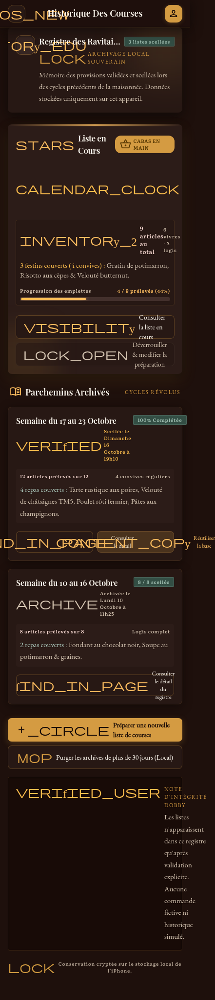